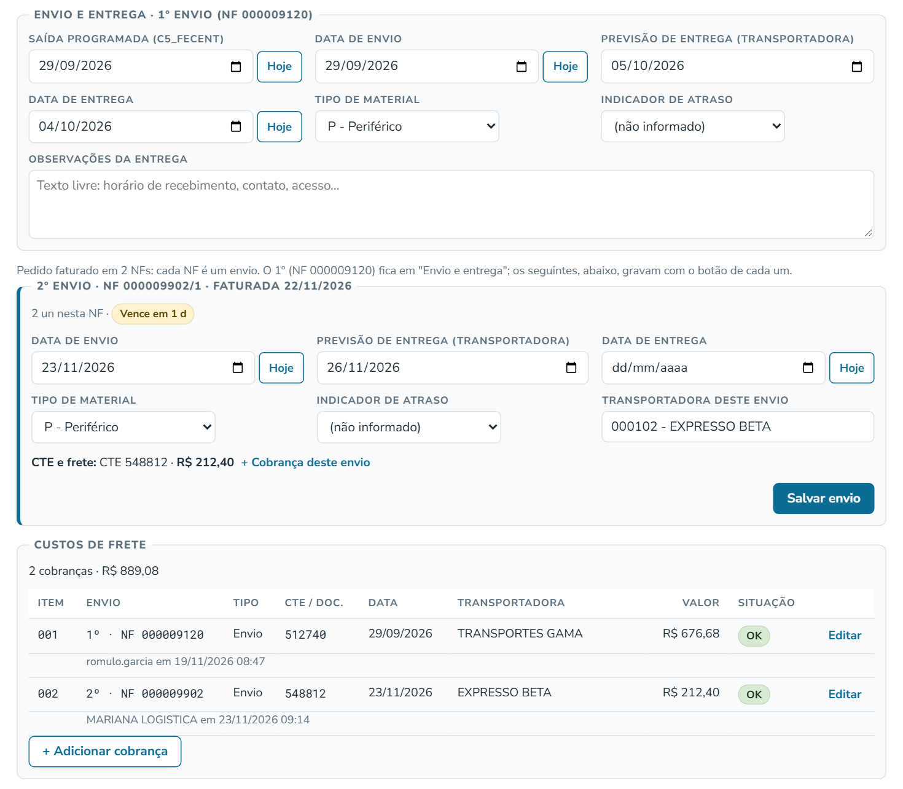
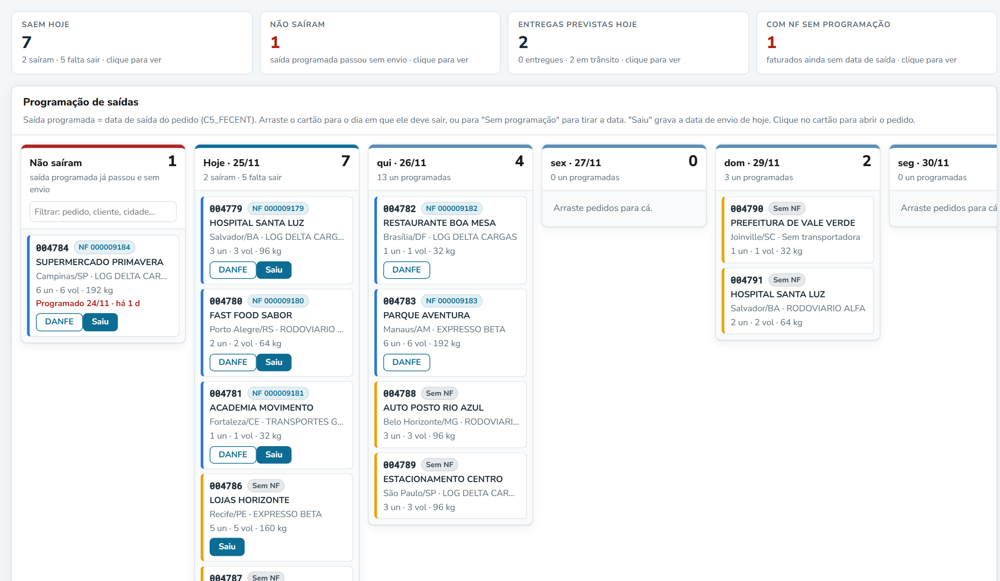
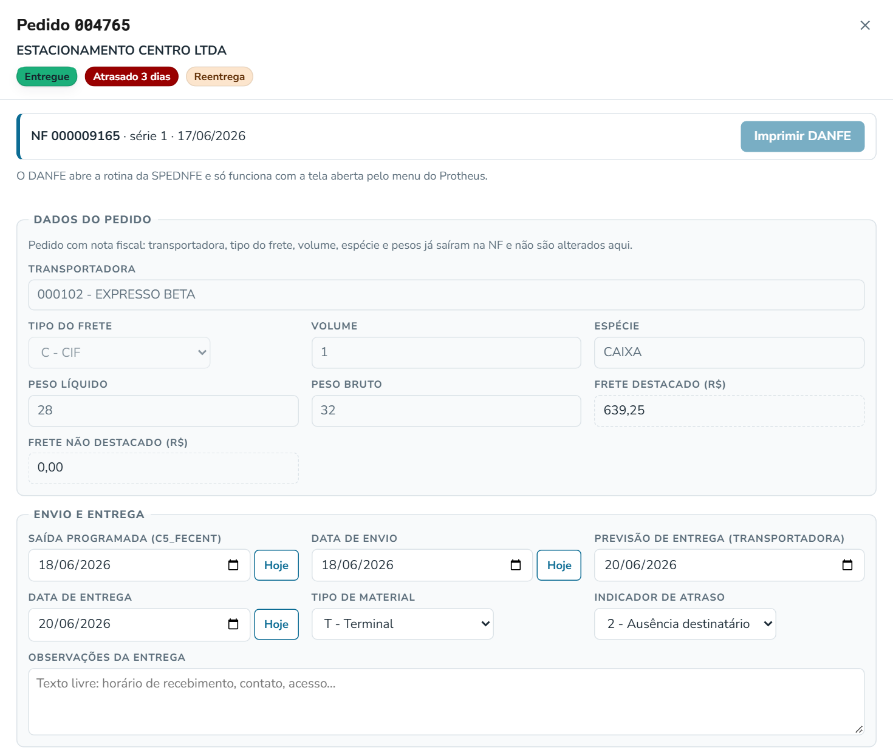
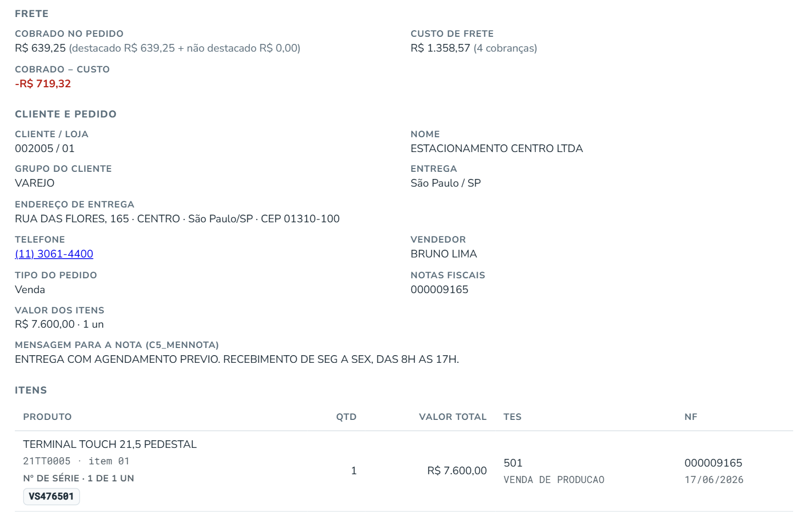

|
|
|
Logística · Pedidos de entrega · atualizações de 25/11/2026
Logística no Protheus: o que mudou desde a apresentação
Olá!
Na apresentação de 19/11 mostrei a tela Logística · Pedidos de entrega. Desde então, ela recebeu melhorias que surgiram no uso do dia a dia, e todas já estão na produção. Abaixo, o que mudou e onde encontrar cada coisa na tela. Os prints usam dados fictícios.
|
| O quê | Para que serve |
| Envios parciais | O pedido faturado em partes tem um envio por NF, cada um com datas, transportadora, CTE e frete próprios. | | Finalizar sem entrega | Extravio, mercadoria enviada em outro pedido ou outro motivo, com o controle do reembolso. | | Sem CTE | Cobrança de frete sem CTE (frete pago sem documento ou retirada pelo cliente). Qualquer cobrança resolve a pendência de CTE. | | Quadros | Coluna Enviados hoje, cartões que filtram ao clicar, filtro de informação faltando em cada coluna e atualização automática. | | Programação | Filtro na coluna “Não saíram” e cartões do topo que levam direto à coluna. | | Detalhe do pedido | Tipo do frete, endereço de entrega, mensagem para a nota, observação do retorno e o indicador “Outros” com a descrição. | | Exportar XLSX | Aba nova Envios (uma linha por NF) e o recorte “Finalizados sem entrega”. | | Planilha Google | Ligada ao Protheus e atualizada a cada 15 minutos, só para consulta. | | Outros ajustes | Período automático, colunas novas na Lista, envios nos Indicadores, pedidos da TES 610 e ajustes visuais. | | | Envios parciais: cada NF é um envio Quando o pedido é faturado em partes, cada NF passa a ser um envio. O 1º continua em “Envio e entrega”; cada NF seguinte ganha o seu bloco no detalhe do pedido, com: | • | data de envio, previsão da transportadora e data de entrega; | | • | tipo de material e indicador de atraso; | | • | transportadora, que pode ser outra que a do 1º envio; | | • | o CTE e o frete daquele envio, pelo botão + Cobrança deste envio. A lista de custos mostra a qual envio cada cobrança pertence. |
O botão Salvar envio grava só aquele bloco. O pedido só vai para Entregues quando todas as NFs foram entregues, e o cartão mostra quantos envios já saíram (“1 de 2 envios”). O prazo do pedido é o do envio mais atrasado, a informação faltando é conferida em cada NF, a linha do tempo mostra cada envio e o pedido entra em Enviados hoje quando qualquer envio dele sai no dia. NF emitida no mesmo dia da primeira conta como o mesmo envio, automaticamente. Se ela não saiu junto, o botão Não saiu junto: registrar envio separado abre o bloco dela.  | Finalizar sem entrega Para o pedido que não vai ter data de entrega: extravio, mercadoria enviada em outro pedido ou outro motivo. Marcada a caixa, o pedido sai dos quadros em aberto e da Programação, vai para a coluna Retornados e finalizados e não entra no % de entregas no prazo. No extravio fica registrado o reembolso: pendente, reembolsado ou sem reembolso, com o valor e a data. O cartão Reembolsos pendentes, nos Quadros, mostra os extravios que ainda não foram resolvidos. Também no detalhe do pedido: | • | o retorno à empresa ganhou uma observação: o que voltou, o estado da mercadoria, o combinado com o cliente; | | • | o indicador de atraso ganhou a opção Outros, com um campo para descrever o que aconteceu. |
Extravio sem reembolso resolvido e indicador “Outros” sem descrição também aparecem como informação faltando.  | Custos de frete: Sem CTE Quando não há CTE, a cobrança pode ser lançada com a opção Sem CTE: com valor, é frete pago sem o documento; com valor zero, é movimentação sem cobrança (por exemplo, retirada pelo cliente na fábrica). E qualquer cobrança lançada, de qualquer tipo, tira o pedido da pendência “falta CTE ou custo de frete”. Antes, só a cobrança do tipo Envio contava.  | Quadros | • | Coluna Enviados hoje: tudo o que saiu hoje, com a etapa de cada pedido. | | • | Cartões que filtram: um clique em qualquer cartão do topo mostra só aqueles pedidos (informação faltando, saíram hoje, atrasados, faturados parados, reembolsos pendentes…); outro clique volta a mostrar todos. | | • | Informação faltando: cada coluna tem esse filtro, e o cartão do pedido mostra o que falta (transportadora, peso, data de envio, CTE…). | | • | Busca pelo número do pedido: mostra só aquele pedido. Antes, “000287” trazia também as NFs que tinham esse número no meio. | | • | Entregues antigos: a coluna Entregues mostra os últimos 30 dias, com o botão “Mostrar também os mais antigos”; com a busca preenchida, aparecem todos, mesmo entregues há meses. | | • | Atualização automática: desligada, 5, 10 ou 15 minutos. A tela busca os dados de novo sozinha e espera enquanto há um pedido aberto. |
 | Programação A coluna Não saíram ganhou um filtro próprio (pedido, cliente, cidade), e os cartões do topo (saem hoje, não saíram, entregas previstas hoje, com NF sem programação) levam direto à coluna.  | Detalhe do pedido: tipo do frete, endereço e mensagem para a nota Em Dados do pedido entrou o tipo do frete (CIF, FOB, por conta de terceiros, do remetente, do destinatário ou sem frete). Como a transportadora, o volume, a espécie e os pesos, ele é preenchido antes da NF, porque sai na nota.  | Em Cliente e pedido aparecem o endereço de entrega e a mensagem para a nota do pedido, só para consulta.  | Exportar XLSX A planilha exportada ganhou a aba Envios, com uma linha por NF, e o recorte Finalizados sem entrega. As colunas novas (tipo do frete, informação faltando, finalização, reembolso) também saem na aba Pedidos e na Lista completa.  | Outros ajustes | • | Período automático: a tela carrega sozinha de 1º de janeiro do ano anterior até hoje. A linha “Consultar no Protheus” saiu do topo. | | • | Lista completa: colunas novas de tipo do frete, informação faltando, finalização (motivo, data, pedido, reembolso) e descrição do indicador “Outros”. No pedido faturado em partes, cada item mostra os dados do envio da sua NF. No CSV da Lista, a data do retorno sai formatada. | | • | Indicadores: no pedido faturado em partes, cada NF conta como um envio; o pedido finalizado sem entrega não entra no % no prazo. | | • | TES 610: os pedidos com a TES 610, usada no início da operação, passaram a aparecer na tela. | | • | Visual: a caixa “Sem CTE” no tamanho certo e o selo da etapa preenchido com a cor da coluna. |
| Planilha Google (só consulta) Para quem prefere consultar em planilha, há uma planilha Google ligada ao Protheus que se atualiza sozinha a cada 15 minutos, com as abas Pedidos, Itens, Envios, Custos de frete e Resumo e as mesmas regras da tela. Ela é só para consulta: o registro continua sendo feito na tela. | Como na primeira versão, nada fica fora do Protheus. Para os envios parciais entrou uma tabela nova; o resto usa o que já existia:
| Onde fica | O que mudou |
| Envios do pedido (tabela nova) | Uma linha por NF a partir da segunda, com as datas, o tipo de material, o indicador e a transportadora de cada envio. O 1º envio continua no próprio pedido de venda. | | Custos de frete | Cada cobrança agora guarda a NF do envio a que se refere. | | Histórico da logística | Também guarda a observação do retorno, a finalização sem entrega (motivo e reembolso) e a descrição do indicador “Outros”, sem criar mais campos no pedido. Toda alteração, inclusive nos envios, fica com o usuário, a data e a hora. | | Pedido de venda | O tipo do frete, o endereço de entrega e a mensagem para a nota já existiam no Protheus: a tela só passou a mostrá-los. | |
|
Qualquer dúvida ou ajuste, é só me chamar.
Fico à disposição.
|
|